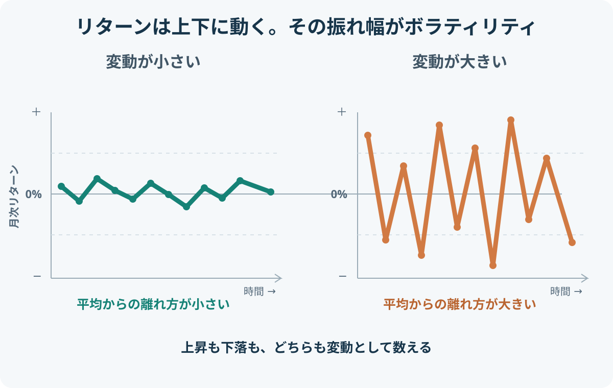

カテゴリツリーを開く
INVESTMENT BASICS / RISK & RETURN
ボラティリティとは？値動きの大きさと投資リスクの見方
ボラティリティとは、資産のリターンが時間とともにどれくらい大きく変動するかを表す言葉です。投資信託や株価指数のリスクを比較するときは、過去のリターンのばらつきを標準偏差で測り、ボラティリティとして表示することがあります。
1. リターンは利益だけを意味しない
投資の「リターン」は、投資によって得られた収益率・運用成果を指します。日常会話の「利益」と違い、プラスだけでなくマイナスも含む言葉です。
| 表現 | 意味 | 例 |
|---|---|---|
| プラスのリターン | 投資した金額に対して増えた | 100万円が105万円になった場合、+5% |
| マイナスのリターン | 投資した金額に対して減った | 100万円が95万円になった場合、−5% |
| リターンの変動 | 期間ごとの収益率が上下する | ある月は+4%、次の月は−3% |
したがって「リターンの変動が大きい」というときは、値上がり幅だけでなく値下がり幅も含めて話しています。ボラティリティは、上昇・下落のどちらに動いたかではなく、リターンが平均的な水準からどれほど離れていたかに注目します。
2. ボラティリティは何を測る？
一般的な過去のボラティリティ（ヒストリカル・ボラティリティ）は、一定期間のリターンを集め、その平均からのばらつきを標準偏差で測ります。標準偏差が大きいほど、リターンの散らばりが大きく、値動きが荒かったと読みます。
たとえば、毎月ほぼ+1%前後で推移する投資と、+6%の月もあれば−5%の月もある投資では、平均リターンが似ていても後者の標準偏差は大きくなります。

標準偏差の計算では、各月のリターンと平均リターンとの差を二乗してから集計します。差を二乗するため、平均より上に離れた場合も下に離れた場合も、ばらつきの大きさとして同じように反映されます。
式の「二乗」がポイントです。たとえば平均が+1%のとき、+4%は平均より3ポイント上、−2%は平均より3ポイント下です。どちらも平均からの距離は3ポイントであり、ボラティリティの計算ではどちらもばらつきとして数えます。
ここで大切なのは、ボラティリティが「下落だけ」を数える指標ではないことです。大きな上昇も、大きな下落も、平均から大きく離れた変動として標準偏差を大きくします。
過去の値動きと、将来の予想を表すボラティリティ
ボラティリティには、何をもとに測るかによって違いがあります。
| 種類 | 何をもとにする？ | 何を表す？ |
|---|---|---|
| ヒストリカル・ボラティリティ（実現ボラティリティ） | 過去の価格やリターンのデータ | 実際にどれくらい変動してきたか |
| インプライド・ボラティリティ | オプション価格など市場価格から逆算 | 市場参加者が織り込む将来の変動の大きさ |
投資信託の運用報告書や商品情報で過去の運用実績と並んで示される標準偏差は、通常、過去のリターンを使ったヒストリカル・ボラティリティです。一方、インプライド・ボラティリティはオプション市場の価格から計算されます。代表例が、S&P 500のオプション価格をもとに今後約30日間の予想変動率を示すVIX指数（恐怖指数）です。VIXは過去の値動きを集計した標準偏差とは異なり、市場価格に織り込まれた将来の変動予想を表します。
3. 数字で比べるとどう違う？
次は仕組みを理解するための仮定例です。AとBはどちらも12か月の平均リターンが月+0.33%ですが、月ごとの動き方は異なります。
| 月 | Aの月次リターン | Bの月次リターン |
|---|---|---|
| 1 | +1% | +5% |
| 2 | +1% | −4% |
| 3 | 0% | +2% |
| 4 | 0% | −3% |
| 5 | −1% | +4% |
| 6 | +1% | −5% |
| 7 | 0% | +3% |
| 8 | 0% | −2% |
| 9 | +1% | +5% |
| 10 | 0% | −4% |
| 11 | 0% | +2% |
| 12 | +1% | +1% |
| 比較項目 | A | B |
|---|---|---|
| 平均月次リターン | 約+0.33% | 約+0.33% |
| 月次リターンの標準偏差（標本） | 約0.65% | 約3.73% |
| 年率換算した標準偏差 | 約2.26% | 約12.90% |
平均リターンは同じでも、Bはプラスにもマイナスにも大きく振れています。そのため標準偏差はAより大きくなります。つまり、平均的な成果だけを見ても、途中の値動きの大きさまでは分かりません。
4. 年率ボラティリティの読み方
投資信託の資料では、ボラティリティを「年率○%」と表示することがあります。月次データから年率換算する一般的な方法は、月次標準偏差に√12を掛けることです。
日次データなら、年間の営業日数を約250日とする前提で、日次標準偏差×√250とする方法がよく使われます。実際の計算では、データの頻度、観測期間、リターンの定義、年率換算のルールを確認する必要があります。
5. ボラティリティだけでは分からないこと
大きな損失がどれくらい発生したか
標準偏差は上昇・下落の両方の変動を扱います。そのため、値動きが大きくても上昇が中心だった投資と、下落が大きかった投資を、ボラティリティだけで区別できません。また、同じ標準偏差でも、損失が連続したのか、一時的に急落したのかまでは分かりません。
ピークからどれだけ下落したか
過去の最高値から、その後の最安値までの下落率を確認するには、最大ドローダウンを使います。最大ドローダウンは実際にどれほど深く下げた局面があったかを示し、ボラティリティとは異なる角度から下落リスクを見られます。
リスクを取った分に見合うリターンだったか
リターンとボラティリティを組み合わせて、値動きの大きさに対してどれだけの超過リターンを得たかを見る指標がシャープレシオです。ただし、シャープレシオも損失の深さや回復期間を直接示すものではありません。
6. 投資信託を比較するときの確認点
複数の投資信託のボラティリティを比べるときは、数値だけを並べず、計算条件をそろえます。条件が違うと、ファンドそのものの値動きの差ではなく、測り方の差を比べてしまうためです。
| 確認項目 | 見る理由 |
|---|---|
| 計測期間・基準日 | 相場環境が違えば、同じ商品でも数値が変わる |
| データ頻度 | 日次・週次・月次で計算結果や年率換算が異なる |
| 通貨・為替ヘッジ | 円換算か外貨建てか、為替変動を含むかで値動きが変わる |
| 分配金の扱い | 分配金再投資を含むリターンか、基準価額だけかを確認する |
| 費用控除の扱い | 費用控除前後のどちらの実績かを確認する |
| 比較対象 | 投資対象・地域・資産配分が近い商品同士で比べる |
また、運用期間が短い商品は、特定の相場環境だけを反映している可能性があります。できるだけ同じ期間・同じ条件のデータを使い、リターンや最大ドローダウンも合わせて確認しましょう。
7. 投資判断での使い方
ボラティリティは、投資対象の値動きの特徴を把握するための材料です。数値が低い商品を選べば必ず安心ということではなく、投資目的や保有期間、資産全体でどのような役割を持たせるかと合わせて考えます。
- 値動きに耐えられるか：大きな下落や評価額の変化があったとき、生活や心理面に無理がないか。
- 投資期間に合うか：近いうちに使う予定のお金と、長期間運用できるお金を分けて考える。
- 資産全体で見る：単体のボラティリティだけでなく、他の保有資産との値動きの関係や配分も確認する。
- 他の指標と組み合わせる：平均リターン、最大ドローダウン、シャープレシオなど、知りたい内容に応じて使い分ける。
まとめ
ボラティリティは、プラス・マイナスの両方を含むリターンの変動の大きさを、標準偏差などで測る指標です。数値が大きいほど、過去のリターンが平均から大きくばらついていたことを示します。
一方で、ボラティリティだけでは最大損失や下落からの回復期間は分かりません。投資信託を比較するときは、計測条件をそろえたうえで、リターン・最大ドローダウン・シャープレシオなども合わせて確認することが大切です。
参考資料
- 国際決済銀行（BIS）「Volatility concepts and the risk premium」 — 実現ボラティリティ、リターンの標準偏差、インプライド・ボラティリティの整理。
- Australian Securities and Investments Commission (ASIC) / Moneysmart「Standard deviation」 — 標準偏差と投資リターンのばらつき。
- Morningstar「Standard Deviation」 — 投資信託の過去リターンの標準偏差と年率換算。